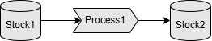

The QuokkaSim Book
Welcome to the QuokkaSim Book – your guide to learning and mastering QuokkaSim, the Rust-based discrete-event simulation framework.
Note:
QuokkaSim is under very active development. Let JJ know if:
- You find mistakes, typos or missing information
- You have ideas to contribute, or want to contribute in a more hands-on capacity
- You're unsure if QuokkaSim is suitable for your use case. If it's not, let's discuss how it can be!
If you are reading this, you probably already know how to contact me 😉 - JJ
What is QuokkaSim?
QuokkaSim is a high-performance, event-driven simulation framework written in Rust, on top of the NeXosim simulation engine.
QuokkaSim is also:
- Open source
- Permissively licensed (MIT License)
- Memory-safe
- Highly performant, via the NeXosim crate
- Accessible to new simulation modellers and new Rust developers
Who should read this book?
This book is written for:
- You
- Some other people too
FAQ
Why does QuokkaSim use Rust?
- Building QuokkaSim in Rust means:
- QuokkaSim can be free and open source under the MIT License.
- QuokkaSim is highly performant (thanks to the NeXosim library).
- Simulations built in QuokkaSim can benefit from the type safety, memory safety, and explicit error handling that is fundamental to Rust. This strictness minimises issues that arise as a simulation model scales and increases in complexity.
Chapter 1: Getting Started
Welcome to your first QuokkaSim simulation! In this chapter you will
- Create a new Rust project
- Add QuokkaSim as a dependency
- Write and run a minimal "hello world" simulation
1.1. Create a new Rust project
If you don’t already have a project, open a terminal and run:
cargo new hello‐quokkasim
cd hello‐quokkasim
This creates a fresh binary crate with src/main.rs.
1.2. Add QuokkaSim to Cargo.toml
To add QuokkaSim as a dependency, use cargo add quokkasim or add the following to your Cargo.toml file before running cargo fetch:
[dependencies]
quokkasim = "0.0.1"
1.3. Write your first Simulation
In your main.rs file, paste in the following code at the top. This imports the required objects, and also creates our ComponentModel and ComponentLogger enums, which we will learn about later.
#![allow(unused)] fn main() { use std::{error::Error, time::Duration}; use quokkasim::{define_model_enums, prelude::*}; use std::fs::create_dir_all; define_model_enums! { pub enum ComponentModel<'a> {} pub enum ComponentLogger<'a> {} } impl<'a> CustomComponentConnection for ComponentModel<'a> { fn connect_components(a: Self, b: Self) -> Result<(), Box<dyn Error>> { Err(format!("connect_components not implemented from {} to {}", a, b).into()) } } impl<'a> CustomLoggerConnection<'a> for ComponentLogger<'a> { type ComponentType = ComponentModel<'a>; fn connect_logger(a: Self, b: Self::ComponentType) -> Result<(), Box<dyn Error>> { Err(format!("connect_logger not implemented from {} to {}", a, b).into()) } } }
Next we create the individual interactive components of our simulation

Stock1 hold some quantity of material, which Process1 moves at specific times, into Stock2. Add the following into the main() function to create these components, and to connect them together.
#![allow(unused)] fn main() { let mut stock1 = VectorStock::<f64>::new() .with_name("Stock1".to_string()) .with_low_capacity(5.) .with_max_capacity(30.) .with_initial_vector(30.); let stock1_mbox = Mailbox::new(); let mut stock1_addr: Address<VectorStock<f64>> = stock1_mbox.address(); let mut process1 = VectorProcess::<f64, f64, f64>::new() .with_name("Process1".to_string()) .with_process_quantity_distr(Distribution::Constant(12.)) .with_process_time_distr(Distribution::Constant(3.)); let process_mbox = Mailbox::new(); let mut process_addr: Address<VectorProcess<f64, f64, f64>> = process_mbox.address(); let mut stock2 = VectorStock::<f64>::new() .with_name("Stock2".to_string()) .with_low_capacity(15.) .with_max_capacity(30.) .with_initial_vector(0.); let stock2_mbox = Mailbox::new(); let mut stock2_addr: Address<VectorStock<f64>> = stock2_mbox.address(); ComponentModel::connect_components( ComponentModel::VectorStockF64(&mut stock1, &mut stock1_addr), ComponentModel::VectorProcessF64(&mut process1, &mut process_addr) ).unwrap(); ComponentModel::connect_components( ComponentModel::VectorProcessF64(&mut process1, &mut process_addr), ComponentModel::VectorStockF64(&mut stock2, &mut stock2_addr) ).unwrap(); }
Next we'll add some Logger instances to report on what occurs during the simulation, and connect them to our Process and Stock components.
#![allow(unused)] fn main() { let mut stock_logger = VectorStockLogger::<f64>::new("StockLogger".into()); let mut process_logger = VectorProcessLogger::<f64>::new("ProcessLogger".into()); ComponentLogger::connect_logger( ComponentLogger::VectorStockLoggerF64(&mut stock_logger), ComponentModel::VectorStockF64(&mut stock1, &mut stock1_addr) ).unwrap(); ComponentLogger::connect_logger( ComponentLogger::VectorStockLoggerF64(&mut stock_logger), ComponentModel::VectorStockF64(&mut stock2, &mut stock2_addr) ).unwrap(); ComponentLogger::connect_logger( ComponentLogger::VectorProcessLoggerF64(&mut process_logger), ComponentModel::VectorProcessF64(&mut process1, &mut process_addr) ).unwrap(); }
Then we create our Simulation object sim, which controls the progression of the simulation.
#![allow(unused)] fn main() { let sim_builder = SimInit::new() .add_model(stock1, stock1_mbox, "Stock1") .add_model(process1, process_mbox, "Process1") .add_model(stock2, stock2_mbox, "Stock2"); let start_time = MonotonicTime::EPOCH; let mut sim = sim_builder.init(MonotonicTime::EPOCH).unwrap().0; }
We send and initialisation events, tell our simulation to run for an hour, and write the resulting logs to CSV files.
#![allow(unused)] fn main() { sim.process_event(VectorProcess::update_state, NotificationMetadata { element_from: "Init".into(), time: start_time.clone(), message: "Init".into() }, &process_addr).unwrap(); let end_time = start_time + Duration::from_secs(3600); sim.step_until(end_time).unwrap(); let output_dir = "outputs/example_0".to_string(); create_dir_all(&output_dir).unwrap(); process_logger.write_csv(output_dir.clone()).unwrap(); stock_logger.write_csv(output_dir.clone()).unwrap(); }
Our main.rs file is now complete (or refer to the Full Code below if you think you're missing something).
Use cargo run to run the simulation, and we have our logs in the outputs/example_0 directory!
Full Code
use std::{error::Error, time::Duration}; use quokkasim::{define_model_enums, prelude::*}; use std::fs::create_dir_all; define_model_enums! { pub enum ComponentModel<'a> {} pub enum ComponentLogger<'a> {} } impl<'a> CustomComponentConnection for ComponentModel<'a> { fn connect_components(a: Self, b: Self) -> Result<(), Box<dyn Error>> { Err(format!("connect_components not implemented from {} to {}", a, b).into()) } } impl<'a> CustomLoggerConnection<'a> for ComponentLogger<'a> { type ComponentType = ComponentModel<'a>; fn connect_logger(a: Self, b: Self::ComponentType) -> Result<(), Box<dyn Error>> { Err(format!("connect_logger not implemented from {} to {}", a, b).into()) } } fn main() { /* * Create components */ let mut stock1 = VectorStock::<f64>::new() .with_name("Stock1".to_string()) .with_low_capacity(5.) .with_max_capacity(30.) .with_initial_vector(30.); let stock1_mbox = Mailbox::new(); let mut stock1_addr: Address<VectorStock<f64>> = stock1_mbox.address(); let mut process1 = VectorProcess::<f64, f64, f64>::new() .with_name("Process1".to_string()) .with_process_quantity_distr(Distribution::Constant(12.)) .with_process_time_distr(Distribution::Constant(3.)); let process_mbox = Mailbox::new(); let mut process_addr: Address<VectorProcess<f64, f64, f64>> = process_mbox.address(); let mut stock2 = VectorStock::<f64>::new() .with_name("Stock2".to_string()) .with_low_capacity(15.) .with_max_capacity(30.) .with_initial_vector(0.); let stock2_mbox = Mailbox::new(); let mut stock2_addr: Address<VectorStock<f64>> = stock2_mbox.address(); ComponentModel::connect_components( ComponentModel::VectorStockF64(&mut stock1, &mut stock1_addr), ComponentModel::VectorProcessF64(&mut process1, &mut process_addr) ).unwrap(); ComponentModel::connect_components( ComponentModel::VectorProcessF64(&mut process1, &mut process_addr), ComponentModel::VectorStockF64(&mut stock2, &mut stock2_addr) ).unwrap(); /* * Create loggers */ let mut stock_logger = VectorStockLogger::<f64>::new("StockLogger".into()); let mut process_logger = VectorProcessLogger::<f64>::new("ProcessLogger".into()); ComponentLogger::connect_logger( ComponentLogger::VectorStockLoggerF64(&mut stock_logger), ComponentModel::VectorStockF64(&mut stock1, &mut stock1_addr) ).unwrap(); ComponentLogger::connect_logger( ComponentLogger::VectorStockLoggerF64(&mut stock_logger), ComponentModel::VectorStockF64(&mut stock2, &mut stock2_addr) ).unwrap(); ComponentLogger::connect_logger( ComponentLogger::VectorProcessLoggerF64(&mut process_logger), ComponentModel::VectorProcessF64(&mut process1, &mut process_addr) ).unwrap(); /* * Build simulation */ let sim_builder = SimInit::new() .add_model(stock1, stock1_mbox, "Stock1") .add_model(process1, process_mbox, "Process1") .add_model(stock2, stock2_mbox, "Stock2"); let start_time = MonotonicTime::EPOCH; let mut sim = sim_builder.init(MonotonicTime::EPOCH).unwrap().0; /* * Run simulation */ sim.process_event(VectorProcess::update_state, NotificationMetadata { element_from: "Init".into(), time: start_time.clone(), message: "Init".into() }, &process_addr).unwrap(); let end_time = start_time + Duration::from_secs(3600); sim.step_until(end_time).unwrap(); let output_dir = "outputs/example_0".to_string(); create_dir_all(&output_dir).unwrap(); process_logger.write_csv(output_dir.clone()).unwrap(); stock_logger.write_csv(output_dir.clone()).unwrap(); }
Chapter 2: A Conceptual Overview
In this chapter, we cover the main concepts defined and used in QuokkaSim, and how to map your real-world scenario into these concepts, which we will later cover how to implement as a model in Chapter 3.
This chapter increases in theoretical depth as it progresses. If you are new to simulations, up to Chapter 2.3. is recommended.
Chapter 2.4. is recommended if you are needing to build more customised components and structures than what QuokkaSim provides out-of-the-box.
After reading this chapter you should:
- Understand QuokkaSim as a Discrete Event Simulation framework, and the contexts in which such a DES framework is applicable
- Understand the core concepts of Resources, Stocks and Processes, and examples of how real-world scenarios can be mapped to these concepts
- Have a basic understanding of the interactions between Processes and Stocks, via the exchange of Resources, and how these events for a process are triggered internally and externally
- Be familiar with the concepts of Resource conservation, and how this relates to Sources, Sink and other types of Process
- Be familiar with the classification of Splitters and Combiners as AND-like, OR-like or a combination of both.
2.1. Discrete Event Simulation and the Schedule
Simulations answer "what-if" questions, most commonly about what is the result of a set of initial conditions, rules, and controls.
One approach is to approximate the continuous flow of time, by simulating the system at regular time-steps. This is a good regime for modelling continuous processes, such as:
- Movement of a pendulum under gravity,
- Temperature of a room over a day, or
- Stresses and fatigue in a beam under repeated loads
A time-stepped approach is good in these cases because
- There are well-defined equations for how quantities of interest change over time
- The length of the time-step can be adjusted based on how precise results need to be (and in fact, some approaches use an adaptive, changing time-step)
In each of the above situations, quantities of interest change continuously over time, so we need to re-calculate the state of the system often to ensure we're capturing any important changes.
However, many systems don't deal with continuous quantities, or have important behaviour happening continuously over time, for example:
- Traffic flow through a traffic light,
- Preparing drinks at a cafe, or
- Car assembly at a factory
In these situations, it can be very inefficient to update every component of the system at every timestep. A better approach here is to only update the system at the exact timesteps where something will happen! This is the approach taken in Discrete Event Simulation.
In Discrete Event Simulation, an ordered schedule of events is maintained, and time jumps forward to the next event, which in turns can schedule more events.
2.2. Resources, Stocks and Processes
TL;DR:
- Resources are the quantities of stuff that we're interested in the movement of
- Stocks are entities which passively hold resources
- Processes are entities which actively move or transform resources, and can hold some resources as part of processing
| Example Use Case | Resource | Stocks | Processes |
|---|---|---|---|
| Water tanks connected by pipes | Litres of water | Tanks, resevoirs, pipes | Valves |
| Trucking of Ore | Tonnes of ore | Stockpiles of ore | Trucks, conveyors, reclaiming equipment |
| Customers in a Cafe | Customers | Queue for ordering, waiting area | Taking orders, serving drinks |
2.3. Detailed Material Flow: Customers in a Cafe
Time = Initial

We have a stock representing a queue of customers, which is processed by a barista who takes drink orders, before customers go into another queue to wait for their drink. The starting point of the simulation is shown in the diagram, with 3 people in line, and 1 person waiting for their drink.
Remember that Discrete Event Simulations relies on scheduled events triggering more events. There are no events at the start of the simulation, so we kick-start the simulation at the start by telling our Barista taking orders Process to update itself.
Time = 0:00

The barista can only process a customer if a customer is in the queue, and if there is sufficient room in the waiting area (or perhaps just to not overwhelm the baristas who are making the drinks).
First, the process retrieves the current state of the upstream stock (Queued Customers) and downstream stock (Waiting for drinks). For now, stocks can have one of three states: Empty, Normal and Full.
Queued customers is Full and Waiting for drinks is Normal. In this case, the barista can take an order, so the process seizes the front-most customer from the queue, and schedules a new event to occur in 30 seconds, when the ordering is complete.
Time = 0:30

30 seconds later, the event triggers Barista taking orders is prompted to update itself again. This time, it first moves Customer B moves into the Waiting for drinks stock, before checking upstream and downstream states again. This time both states are Normal, in which case the process seizes the next customer and repeats.

Time = 1:00

Barista taking orders is again triggered to update its state, and moves C into Waiting for drinks. This time the upstream and downstream states are Normal and Full. Because downstream is full, we do not process the next customer, and instead wait until we are triggered to update again.
Time = 1:15

Waiting for drinks has reduced from 3 people to 1 person, meaning its state has changed from Full to Normal. This change of state triggers any upstream or downstream processes to update, meaning that Barista taking orders is triggered to update.
Barista taking orders checks both upstream and downstream state again, finds both are Normal, so then begins processing D.
2.4. A Taxonomy of Processes
In QuokkaSim, Processes are at the heart of all dynamic behaviours. We wish to make our processes as flexible as possible to allow us to test whatever we wish. However, we also wish to have as minimal of a set of these processes as possible, to minimise complexity and the mental burden of reasoning about them. With a small set of well-defined components, modellers who are new to QuokkaSim are able to pick up the framework quickly, and effectively translate real-world scenarios to a model representation.
Note that we are not saying you have to follow this taxonomy or these concepts. You are free to create your own components suited to your use cases. If you have a case that isn't well suited to using our components, we'd like to hear about it! If such use cases are common, we will consider adding them as components in QuokkaSim directly.
| Concept | # Inputs | # Outputs | Conserves resources? |
|---|---|---|---|
| Simple Process | 1 | 1 | ✅ Yes |
| Source | 0 | 1 | ❌ Creates resources |
| Sink | 1 | 0 | ❌ Destroys resources |
| Combiner | N | 1 | ✅ Yes |
| Splitter | 1 | N | ✅ Yes |
2.4.1. Resource Conservation
In most systems, there can be a natural sense of conservation, or of balance. For example:
- In a transport simulation, a
Car { car_id: u32, make: String, model: String }resource should not be created or destroyed in most processes. Cars are a conserved quantity in this context. - In a manufacturing simulation where we track the parts of a car through the manufacturing process via a vector of masses
ProtoCar { assembled_kg: f64, loose_tyres_kg: f64, loose_engine_kg: f64 }, the total mass of parts through our system should be conserved, except where new parts are introduced into the system or the assembled car is removed from the system. However, the individual components likeloose_tyres_kgare not conserved, and can be transformed intoassembled_kgsubject to the total mass being conserved. - In an ore crushing operation, where a crusher processes large rocks into smaller pieces, we may use a vector of masses
Ore { small: f64, medium: f64, large: f64 }. The crusher may transform large pieces into small or medium pieces, but the total mass is conserved.
By having most processes conserving resources, the key activities of resource creation and destruction are separated out into their own proceses, which can be monitored with more scrutiny than other processes.
2.4.2. Types of Combiners and Splitters
Combiners and Splitters can be further classified by whether or not inputs/outputs are AND-like (combinations) or XOR-like (choices) - or a combination of both.
What does this mean? Let's think through a couple of examples of combiners first.

Let's say you're a delivery driver. At your disposal is a number of cars, vans and trucks. Each distinct set of vehicle is a stock, but you can only choose to take from one of these stocks at this time. This is an XOR-like combiner process, as you must choose a car or a van or a truck - where or is an exclusive or (XOR).

On the other hand, let's say you are combining the ingredients for a cake - butter, sugar, eggs and flour. In this case, we want a combination of all four in a specific ratio, not an exclusive choice of one of them. In general we want a combination of some quantity of butter and sugar and eggs and flour (though in an edge case some quantities may be 0), thus this is a AND-like combiner process.
An example of a more general combiner which has both XOR and AND elements is the above cake batter example, but where you have to choose exclusively from different types of sugar like White Sugar, Brown Sugar and Honey.
A similar breakdown can be made of Splitters. XOR-like splitters push material into one stock at a time. AND-like splitters generally push material into all downstream stocks at once. A more general splitter can push into multiple, but have some exclusivity constraints.
Chapter 3: A Basic Simulation Model
Now that we've understood the core concepts used by QuokkaSim, let's look at how we assemble a simple simulation model from scratch.
3.1. Choose Your Data Structures
QuokkaSim supports the following Resource types out-of-the-box:
-
Vectors (f64)
- Use when your quantity of interest is a single number that can take a continuous range of values.
- e.g. For modelling power consumption, your
f64can represent Energy in Joules - e.g. For modelling material flow, your
f64can represent payload mass in kg VectorProcess<f64>,VectorStock<f64>and other similar components can be used out-of-the-box
-
Vectors (Vector3)
- Use when your quantity of interest has up to three independent components of interest
- e.g. For modelling nutrient consumption in crops, your
Vector3can represent masses of Nitrogen, Phsophorous and Potassium elements - e.g. For modelling an iron ore mine, your
Vector3can represent Iron, Silica and other elements by mass VectorProcess<Vector3>,VectorStock<Vector3>and other similar components can be used out-of-the-box
-
Sequences (String)
- Use for models where data is represented as sequences or lists of identifiers.
- Use when your quantity of interest experiencing queuing or other behaviours dependent on other relative ordering
- Example:
SequenceStock<String>is useful for handling events or discrete item identifiers.
Your simulation can use a combination of these, or you can create your own resources if this suits your use case better (e.g. if you prefer a vector with named entries for readability, instead of referencing components by index).
| Vectors (f64) | Vectors (Vector3) | Sequences (String) | |
|---|---|---|---|
| Resource | f64 | Vector3 | String |
| Stock | VectorStock<f64> | VectorStock<Vector3> | SequenceStock<String> |
| Process (1-in, 1-out) | VectorProcess<f64, f64, f64> | VectorProcess<Vector3, Vector3, f64> | SequenceProcess<Option<String>> |
| Process (N-in, 1-out) | VectorCombiner<f64, f64, f64, const M: usize> | VectorCombiner<Vector3, Vector3, f64, const M: usize> | TBC |
| Process (1-in, N-out) | VectorSplitter<f64, f64, f64, const N: usize> | VectorSplitter<Vector3, Vector3, f64, const N: usize> | TBC |
| Process (0-in, 1-out) | VectorSource<...> | VectorSource<...> | TBC |
| Process (1-in, 0-out) | VectorSink<...> | VectorSink<...> | TBC |
| Example use case | Water tanks | Ore movements (using a vector to track elemental composition) | Customers at a Cafe |
Why so many generic type parameters?
The pre-defined generic structs VectorProcess, SequenceStock etc. can be used for any resource your simulation requires - as long as your resource satisfies all trait requirements. These requirements are checked at compiled time by the compiler, so if your code compiles, there's a good chance it will work.
Specifically, for VectorProcess<T, U, V>:
Tis your resource typeUis the parameter type that is sent by the process to any downstream components, andVis the parameter type that is sent to upstream components to request material
Thus VectorProcess<Vector3, Vector3, f64> is a 1-in, 1-out process which handles a T=Vector3, and is passed downstream as a U=Vector3. However, when requesting the upstream Stock for material, this process sends a V=f64 corresponding to the total quantity of desired material, and the stock responds with a T=Vector3.
4. Examples
A number of example simulations exist to act as a reference for how to apply the concepts covered in this guide, in practice:
| Example Name | Description | Concepts Demonstrated |
| material_blending.rs | Model of a stockyard with Reclaimers to remove material from multiple stockpiles, and a Stacker to add material to multiple stockpiles. | Pre-built components Vector Resource (Vector3) Splitters and Combiners |
| discrete_queue.rs | Basic example demonstrating use of a Sequence resource of Strings. Processes and stocks are arranged in infinite loop. | Pre-built components Sequence Resource (String) Distribution Sampling |
| iron_ore.rs | Processes involving an Iron Ore resource, which tracks elemental mass composition, and composition by mineral types. | Custom vector resource Distribution Sampling |